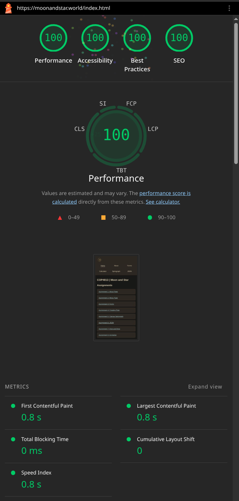
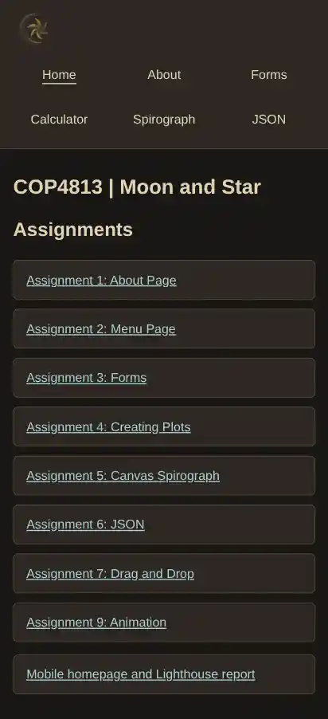

Mobile homepage report
COP4813 · William Larson · November 1, 2026
Implementation
The homepage preserves the logo, Home, About, Forms, Calculator, Spirograph and JSON navigation choices and all eight existing assignment links. A link to this report was added.
- Navigation wraps into visible rows on phones, without JavaScript or hover gestures.
- Assignment links use one column on small screens and two on larger screens. Flexible spacing and headings accommodate narrow layouts.
- Links have at least 48-pixel-high touch areas, visible keyboard focus and improved contrast. A skip link, named navigation and current-page indicator support navigation.
- The title, description, English language and viewport metadata are retained. The logo has alternative text and explicit dimensions.
- The homepage and report use a separate stylesheet; other assignment pages and their activities are unchanged.
Lighthouse Navigation results
These results are taken from the original Lighthouse export supplied by the site owner, rather than a new audit run by the assistant.
- Audited URL
- https://moonandstar.world/index.html
- Captured
- November 1, 2026, 1:16 PM EST (18:16:24 UTC)
- Mode and device
- Navigation / initial page load; Mobile; emulated Moto G Power; single page session
- Environment
- Lighthouse 13.5.0; Chromium 156.0.0.0 with DevTools; simulated Slow 4G throttling and 4× CPU slowdown
- Performance
- 100 / 100
- Accessibility
- 100 / 100
- Best Practices
- 100 / 100
- SEO
- 100 / 100
- First Contentful Paint
- 0.8 s
- Largest Contentful Paint
- 0.8 s
- Total Blocking Time
- 0 ms
- Cumulative Layout Shift
- 0
- Speed Index
- 0.8 s
Open the complete original Lighthouse report · View the extracted audit JSON

View the homepage capture stored in the Lighthouse export
This image is extracted directly from the audit’s embedded full-page screenshot; it is not a new device test.

Issues and analysis
All four scored categories reached 100. This run recorded a fast load, no blocking time and no layout shift. Scores can vary between runs. A perfect score does not mean every diagnostic or manual check is resolved.
- Image delivery — estimated savings of 382 KiB: Lighthouse identifies assets/MoonAndStar.png, a 1254 × 1254 image shown in a 50 × 50 CSS-pixel logo box. Its resource size is 392,249 bytes. A smaller appropriately sized image and improved compression or a modern format are possible follow-up improvements. The logo has not been changed as part of this report update.
- Cache lifetimes — estimated savings of 353 KiB: the logo and both stylesheets have 600-second (10-minute) cache lifetimes. The logo accounts for most of the potential savings. Longer caching may improve repeat visits, subject to hosting configuration and an asset-versioning strategy. No server cache policy has been changed.
- Render-blocking requests and dependencies: main-theme.css (718 transfer bytes) and home-mobile.css (1,108 transfer bytes) block initial rendering. The maximum critical request chain is 61 ms. These files are small; retain the simple styling unless further measurement supports a change. Lighthouse found no additional useful preconnect candidates.
- Accessibility and SEO: all scored checks passed. The report still lists 10 manual accessibility checks and a manual structured-data check. Keyboard order, focus visibility, screen-reader behavior and real-phone use require manual review; a score of 100 does not establish complete accessibility.
- Security guidance: review the original report’s unscored CSP, HSTS, COOP, frame-control and Trusted Types guidance before making hosting changes. A Best Practices score of 100 is not a security certification. No security-header changes are claimed here.
No baseline homepage audit was supplied, so this report does not claim a before/after score improvement. The supplied export is the evidence for the recorded deployed-page results; future changes require a repeat audit to establish new results.
Manual mobile interaction checks
Local browser checks at requested widths of 320, 375, 390, 768 and 1280 CSS pixels found no horizontal overflow (375 rounded to 376 in the test browser). All six navigation links, eight assignment links, the logo and report link opened their expected pages. Homepage link targets measured at least 48 pixels high. The keyboard skip link moved focus to main content. These are viewport and interaction checks, separate from the supplied Lighthouse audit. Real-phone, screen-reader and enlarged-text checks have not been recorded.